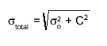
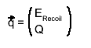
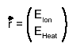
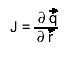
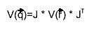

class KQUncertainty
KQUncertainty.cxx Author: Adam Cox <mailto:adam.cox@kit.edu> *Copyright 2010 Karlsruhe Inst. of Technology. All Rights Reserved. This class will calculate the width of the EM and NR bands in the Q-plot for a given recoil energy. You must, however, provide the energy resolutions of the ion and heat channels. Here is an example of how to use this class. Suppose you have an event where the measured recoil energy is E_r, the energy on the ion channel is E_i, the energy on the heat channel is E_h, and the q value, Q. You also know the uncertainty of the ion and heat channels at zero energy and at the 133Ba calibration energy, and the voltage bias of the bolometer sigma_ion_zero, sigma_ion_calib, sigma_heat_zero, sigma_heat_calib, voltBias. Double_t uncerIon = KQUncertainty::GetChannelUncertainty(E_i, sigma_ion_zero, sigma_ion_calib); Double_t uncerHeat = KQUncertainty::GetChannelUncertainty(E_h, sigma_heat_zero, sigma_heat_calib); Double_t nuclearRecoilBandWidth = KQUncertainty::GetNuclRecWidth(E_r, uncerIon, uncerHeat, voltBias); Double_t emBandWidth = KQUncertainty::GetElecRecoilWidth(E_r, uncerIon, uncerHeat, voltBias); You may want to know if your event is within the Nuclear Recoil band or if its within the EM Recoil Band. You can use this class: Bool_t isInNRBand = KQUncertainty::IsInNuclearRecoilBand(Q, E_r, nuclearRecoilBandWidth); Bool_t isInEMBand = KQUncertainty::IsInElecRecoilBand(Q, emBandWidth); Alternatively, this method is overloaded and you can skip all of the steps by calling Bool_t isInNrBand = KQUncertainty::IsInNuclearRecoilBand(Q, E_r, E_i, E_h, sigma_ion_zero, sigma_ion_calib, sigma_heat_zero, sigma_heat_calib, voltBias) Bool_t isInEmBand = KQUncertainty::IsInElecRecoilBand(Q, E_r, E_i, E_h, sigma_ion_zero, sigma_ion_calib, sigma_heat_zero, sigma_heat_calib, voltBias) The calculations of the uncertainties in this class are based on the formula presented in the Edelweiss Calibrations Paper Martineau O, Benoit a, Berge L, et al. Calibration of the EDELWEISS cryogenic heat-and-ionization germanium detectors for dark matter search. Nuclear Instruments and Methods in Physics Research Section A. 2004;530(3):426-439. Available at: http://linkinghub.elsevier.com/retrieve/pii/S0168900204010162 except for equation 11 in that paper. I believe this equation is wrong and should be written as 
Function Members (Methods)
public:
| KQUncertainty() | |
| KQUncertainty(const KQUncertainty&) | |
| virtual | ~KQUncertainty() |
| static TClass* | Class() |
| static Double_t | GetChannelUncertainty(Double_t energy, Double_t uncerZero, Double_t uncerCalibEnergy, Double_t calibEnergy = 356.0) |
| static Double_t | GetCovarianceQERecoil(Double_t anIonEnergy, Double_t aHeatEnergy, Double_t anIonUncertainty, Double_t aHeatUncertainty, Double_t aVoltageBias, Double_t anEpsilon, Double_t aRowIndex = 1, Double_t aColumnIndex = 1) |
| static Double_t | GetElecRecoilWidth(Double_t energy, Double_t ionUncer, Double_t heatUncer, Double_t voltageBias, Double_t epsilon = 3.0) |
| static Double_t | GetNuclRecWidth(Double_t energy, Double_t ionUncer, Double_t heatUncer, Double_t voltageBias, Double_t epsilon = 3.0, Double_t inherentWidth = 0.04) |
| static Double_t | GetQMeanValue(Double_t anEnergy, Double_t anEnergyUncertainty) |
| static Double_t | GetQValue(Double_t energy) |
| static Double_t | GetQValueLowerBound(Double_t qValue, Double_t width, Double_t conflevel = 0.90) |
| static Double_t | GetQValueUpperBound(Double_t qValue, Double_t width, Double_t conflevel = 0.90) |
| virtual TClass* | IsA() const |
| static Bool_t | IsInElecRecoilBand(Double_t myQvalue, Double_t emWidth, Double_t confidenceLevel = 0.99) |
| static Bool_t | IsInElecRecoilBand(Double_t myQvalue, Double_t Erecoil, Double_t Eion, Double_t Eheat, Double_t uncerIonZero, Double_t uncerIonCalib, Double_t uncerHeatZero, Double_t uncerHeatCalib, Double_t voltBias, Double_t confidenceLevel = 0.99, Double_t epsilon = 3.0, Double_t ionCalibEnergy = 356.0, Double_t heatCalibEnergy = 356.0) |
| static Bool_t | IsInNuclearRecoilBand(Double_t myQvalue, Double_t myEnergy, Double_t nuclRecWidth, Double_t confidenceLevel = 0.90) |
| static Bool_t | IsInNuclearRecoilBand(Double_t myQvalue, Double_t Erecoil, Double_t Eion, Double_t Eheat, Double_t uncerIonZero, Double_t uncerIonCalib, Double_t uncerHeatZero, Double_t uncerHeatCalib, Double_t voltBias, Double_t confidenceLevel = 0.90, Double_t epsilon = 3.0, Double_t ionCalibEnergy = 356.0, Double_t heatCalibEnergy = 356.0, Double_t inherentWidth = 0.04) |
| KQUncertainty& | operator=(const KQUncertainty&) |
| virtual void | ShowMembers(TMemberInspector&) |
| virtual void | Streamer(TBuffer&) |
| void | StreamerNVirtual(TBuffer& ClassDef_StreamerNVirtual_b) |
Class Charts
| Inheritance Chart: | |||||
|
Function documentation
KQUncertainty(const KQUncertainty& )
~KQUncertainty(void)
Double_t GetQValue(Double_t energy)
This method returns the Q value for a nuclear recoil event with specified recoil energy
Double_t GetQMeanValue(Double_t anEnergy, Double_t anEnergyUncertainty)
This method returns the Q mean value for binned data of nuclear recoil events for specified mean and uncertainty
Double_t GetCovarianceQERecoil(Double_t anIonEnergy, Double_t aHeatEnergy, Double_t anIonUncertainty, Double_t aHeatUncertainty, Double_t aVoltageBias, Double_t anEpsilon, Double_t aRowIndex = 1, Double_t aColumnIndex = 1)
This method returns the covariance matrix of q =(ERecoil,Q) of a single fiducial event If the vectors   and the Jacobian  is given, then the covariance matrix is calculated then by error propagation 
Double_t GetChannelUncertainty(Double_t energy, Double_t uncerZero, Double_t uncerCalibEnergy, Double_t calibEnergy = 356.0)
This method returns the linearly interpolated (and extrapolated) energy resolution on a channel (either ion channel or heat channel). You must provide the energy on the channel, the uncertainty on the energy at E = 0 (uncerZero), the uncertainty on the energy at the calibration energy (uncerCalibEnergy). Optionally you can provide the calibration energy if it is different than the standard 356 keV gamma peak from 133Ba.
Double_t GetNuclRecWidth(Double_t energy, Double_t ionUncer, Double_t heatUncer, Double_t voltageBias, Double_t epsilon = 3.0, Double_t inherentWidth = 0.04)
This method returns the width of the Nuclear Recoil Q-plot band at a particular recoil energy (energy), given the ion and heat channel measured uncertainty for this particular energy, and the voltage bias of the bolometer. Additionally, one may specify the average potential for an electron-ion pair to be formed in Germanium (default is 3V). The ionUncer and heatUncer values can be obtained by using KQUncertainty::GetChannelUncertainty.
Double_t GetElecRecoilWidth(Double_t energy, Double_t ionUncer, Double_t heatUncer, Double_t voltageBias, Double_t epsilon = 3.0)
This method returns the width of the Electromagetic Q-plot band at a particular recoil energy (energy), given the ion and heat channel measured uncertainty for this particular energy, and the voltage bias of the bolometer. Additionally, one may specify the average potential for an electron-ion pair to be formed in Germanium (default is 3V). The ionUncer and heatUncer values can be obtained by using KQUncertainty::GetChannelUncertainty.
Double_t GetQValueUpperBound(Double_t qValue, Double_t width, Double_t conflevel = 0.90)
At the moment, this assumes that Q is normally distributed about its mean. However, we know this is not true since Q = Eion/Erecoil and if Eion and Erecoil are guassian distributions, then the ratio of two guassian distributions is NOT a gaussian. We are currently approximating it to be a gaussian, but this code should be modified. The Confidence level (conflevel) should be between 0 and 1. returns -1 if it is not. Otherwise, this function returns qValue + sqrt(2) * TMath::ErfInverse(conflevel)*uncer; sqrt(2) * TMath::ErfInverse(conflevel) is the number of "sigma" away from the mean for a gaussian distribution (so in reality, this method works for ANY guassian distributed variable)
Double_t GetQValueLowerBound(Double_t qValue, Double_t width, Double_t conflevel = 0.90)
At the moment, this assumes that Q is normally distributed about its mean. However, we know this is not true since Q = Eion/Erecoil and if Eion and Erecoil are guassian distributions, then the ratio of two guassian distributions is NOT a gaussian. We are currently approximating it to be a gaussian, but this code should be modified. The Confidence level (conflevel) should be between 0 and 1. returns -1 if it is not. Otherwise, this function returns qValue - sqrt(2) * TMath::ErfInverse(conflevel)*uncer; sqrt(2) * TMath::ErfInverse(conflevel) is the number of "sigma" away from the mean for a gaussian distribution
Bool_t IsInNuclearRecoilBand(Double_t myQvalue, Double_t myEnergy, Double_t nuclRecWidth, Double_t confidenceLevel = 0.90)
compares myQvalue to the allowed range of Q values for myEnergy and the channel energy resolution
you must provide
1. the q value of your event (myQvalue)
2. the recoil energy of your event (myEnergy)
3. the width of the nuclear recoil band for this particular energy (nuclRecWidth).
nuclRecWidth can be obtained from KQUncertainty::GetNuclRecWidth()
4. optionally, you can specify the confidenceLevel for the nuclear recoil band. Default is the 90% CL.
returns true if your q value / energy are insie the Nuclear Recoil band, false otherwise.
Bool_t IsInNuclearRecoilBand(Double_t myQvalue, Double_t Erecoil, Double_t Eion, Double_t Eheat, Double_t uncerIonZero, Double_t uncerIonCalib, Double_t uncerHeatZero, Double_t uncerHeatCalib, Double_t voltBias, Double_t confidenceLevel = 0.90, Double_t epsilon = 3.0, Double_t ionCalibEnergy = 356.0, Double_t heatCalibEnergy = 356.0, Double_t inherentWidth = 0.04)
Does everything for you. Double_t uncerIon = GetChannelUncertainty(Eion, uncerIonZero, uncerIonCalib, ionCalibEnergy); Double_t uncerHeat = GetChannelUncertainty(Eheat, uncerHeatZero, uncerHeatCalib, heatCalibEnergy); Double_t nuclRecWidth = GetNuclRecWidth(Erecoil, uncerIon, uncerHeat, voltBias, epsilon, inherentWidth); return IsInNuclearRecoilBand(myQvalue, Erecoil, nuclRecWidth, confidenceLevel);
Bool_t IsInElecRecoilBand(Double_t myQvalue, Double_t emWidth, Double_t confidenceLevel = 0.99)
Bool_t IsInElecRecoilBand(Double_t myQvalue, Double_t Erecoil, Double_t Eion, Double_t Eheat, Double_t uncerIonZero, Double_t uncerIonCalib, Double_t uncerHeatZero, Double_t uncerHeatCalib, Double_t voltBias, Double_t confidenceLevel = 0.99, Double_t epsilon = 3.0, Double_t ionCalibEnergy = 356.0, Double_t heatCalibEnergy = 356.0)
Does everything in one shot. Double_t uncerIon = GetChannelUncertainty(Eion, uncerIonZero, uncerIonCalib, ionCalibEnergy); Double_t uncerHeat = GetChannelUncertainty(Eheat, uncerHeatZero, uncerHeatCalib, heatCalibEnergy); Double_t emWidth = GetElecRecoilWidth(Erecoil, uncerIon, uncerHeat, voltBias, epsilon); return IsInElecRecoilBand(myQvalue, Erecoil, emWidth, confidenceLevel);